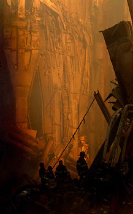

Eric Grondin, 12 Septembre 2001, 8h00Ce qui s'est passé hier m'a profondément secoué. Si ma
mémoire est bonne on
est tous allé dans le big apple et on saisit mieux le gigantisme de ces
tours et l'ampleur du drame.
J'ai passé par toutes les gammes d'émotions et encore aujourd'hui
je
n'aurai pas la tête à l'ouvrage de même que pour plusieurs
jours encore. Ce
matin, j'ai un sentiment de colère et de vengeance pour cet acte abject.
Ça fait du bien d'en parler...
Eric
Guy Bruneau, 8h30
Un journaliste a bien décrit la chose hier en disant qu'on a castré New-York.
Guy